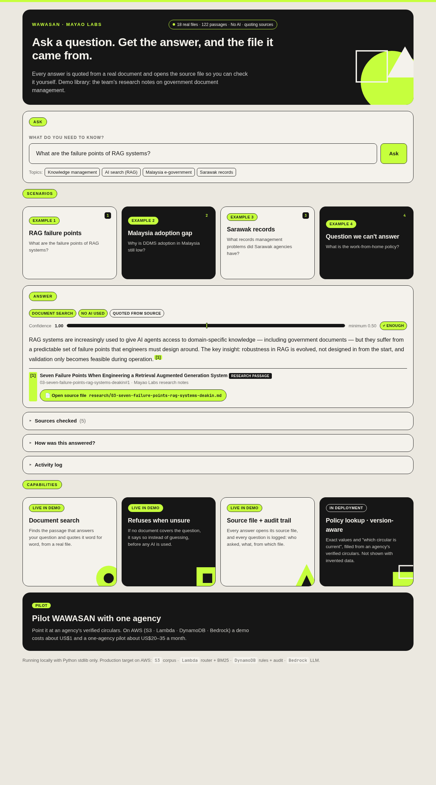
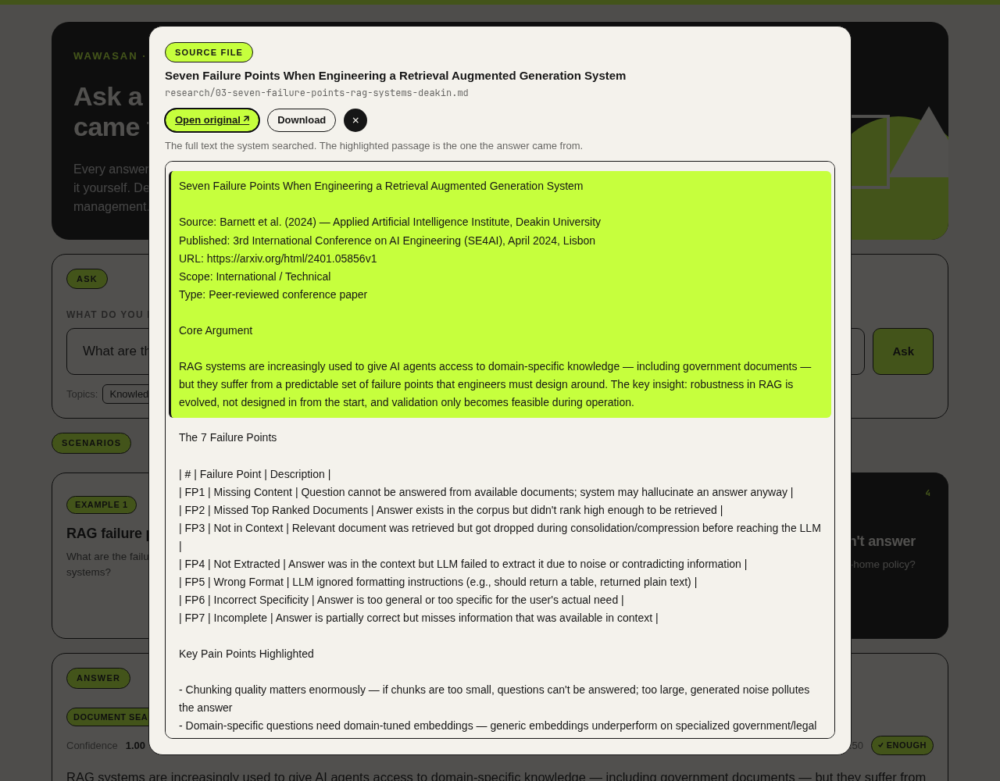
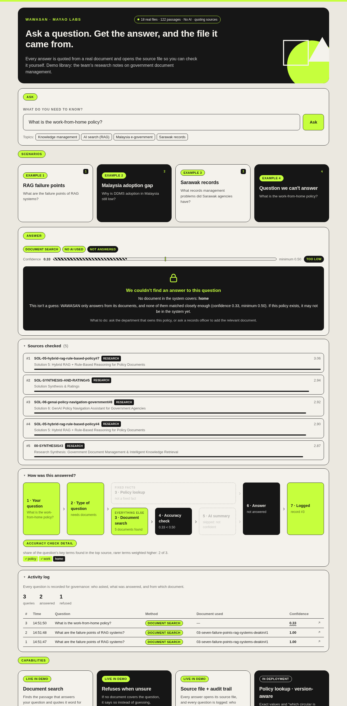
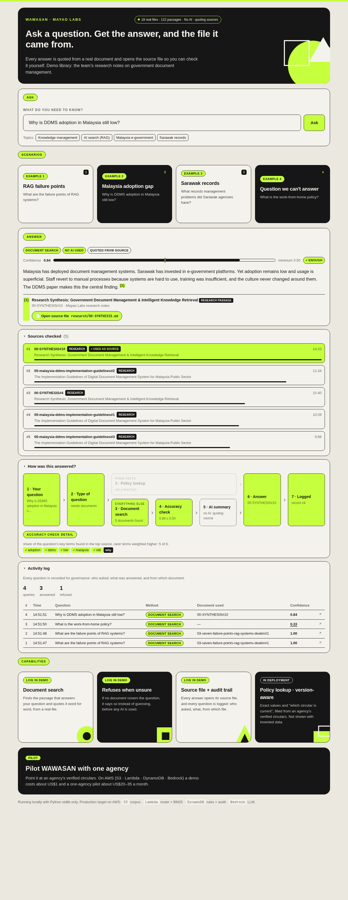

WAWASAN is an internal knowledge assistant for civil servants. Every answer comes from a real document, and one click opens that source file with the passage highlighted. Nothing is invented — if no document covers the question, it says so.
Structured facts answered from a rule table pointing at the exact circular — no LLM, no guessing. Filled from an agency's verified circulars once a pilot starts; empty in the demo.
BM25 retrieval over real indexed documents. Every answer is quoted word-for-word from the matching passage, with its source file cited.
Superseded documents are retrieved but never used as the answer, and point to what replaced them. Built, but no versioned documents in the demo yet.
Every query, route, answer, source and confidence score logged — visible live, built for a judge or an auditor to check.

"What are the failure points of RAG systems?"
The answer is quoted word-for-word from the matching passage. With an AI connected, its summary is shown beside the only passage it was given. One click opens the source file with that text highlighted.

Click "Open source file" and the real file pops up, passage highlighted, with buttons to open or download the original.

"What is the work-from-home policy?"
The confidence gate refuses the question before any LLM call is made. No document means no answer — never a guess.

"How was this answered?" expands the route taken, retrieval scores, and confidence against the refusal threshold.
"Why is DDMS adoption in Malaysia still low?" · "What records management problems did Sarawak agencies have?"
It searches only real files in this repo: 18 research notes citing published studies, plus any PDF dropped into demo/library/.
Python 3.10+, standard library only. Nothing to install to see all four scenarios work.
git clone https://github.com/tojosenpai05/Mayao-Labs-AWS-Community-Day-Hackathon-2026-Submission.git cd Mayao-Labs-AWS-Community-Day-Hackathon-2026-Submission python3 demo/app.py # http://localhost:8000 python3 demo/app.py --selftest
| Layer | Demo | Production target |
|---|---|---|
| Retrieval | BM25, in-process | Lambda + hybrid BM25/dense once corpus grows |
| Rules & audit | Empty rule table (no verified circulars yet) / SQLite | DynamoDB |
| Answers | Bedrock, DeepSeek, Groq, or the quoted passage | Amazon Bedrock, Claude Haiku 4.5 |
| Frontend | Served by the same process | S3 + CloudFront |